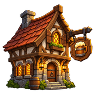
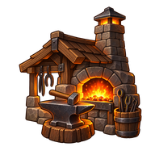
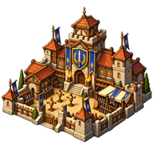
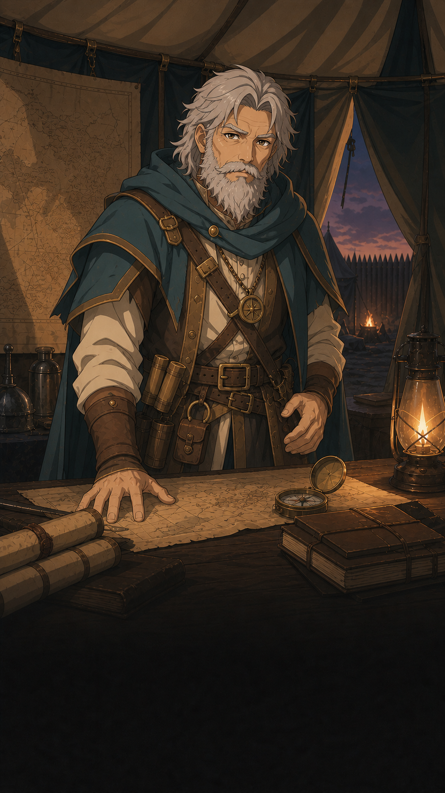
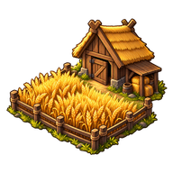
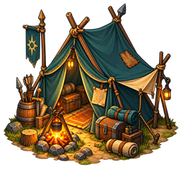

Règles du jeu
PNJ, dialogues et recrutement
Rencontrer les personnages non joueurs, comprendre leurs services et choisir les spécialistes, travailleurs, officiers ou mentors utiles à son héros.
Les règles de ce thème
Un PNJ est un personnage non joueur. Il peut accueillir le héros, lui confier une mission, transmettre un indice ou proposer un recrutement. Son rôle détermine les interactions possibles : tous les PNJ ne se recrutent pas et parler ne donne pas automatiquement une récompense.
Qui sont les PNJ ?
Les PNJ ne remplissent pas tous la même fonction. Le tableau distingue les principaux rôles, sans attribuer de statistiques de combat aux simples interlocuteurs.
| Rôle | Où le rencontrer | Ce qu’il peut proposer |
|---|---|---|
 | Village, ville, capitale, camp, fort ou exploitation | Affaires locales, dialogues et missions selon sa fiche |
 | Lieu doté d’une taverne | Missions, rumeurs, recrutements et services disponibles |
 | Lieu doté d’une forge | Équipements, fabrication, outils et rumeurs accessibles |
 | Offre de taverne compatible | Transport, prospection ou installation productive |
 | Offre de taverne compatible | XP de troupe après affectation, ou formation du héros |
 | Lieu et étape définis par l’aventure | Dialogue, objectif, objet à transporter ou événement prévu |
Le tableau décrit des possibilités, pas une liste de services garantis dans chaque lieu. Les bâtiments, la relation au lieu, les stocks et les étapes du scénario déterminent les options réellement proposées. Un responsable de village ne devient pas un soldat parce qu’il apparaît dans une conversation.
Responsables et personnages de scénario
En l’absence de personnage spécifique, les villages ont un chef, les villes et capitales un bourgmestre, les camps un chef d’expédition et les forts un seigneur du fortin. Mines, carrières et chantiers de bois ont leur responsable de métier.
Un personnage défini par le scénario est prioritaire sur ce profil par défaut. Le maréchal Aldren ou Armand n’apparaissent donc pas obligatoirement dans toutes les parties. Leurs répliques et propositions dépendent de l’aventure et des objectifs accessibles.
Une conversation offre des choix préparés par les règles ou le scénario ; il ne s’agit pas d’une discussion libre donnant au joueur le droit d’inventer un objet, une quête ou une récompense. Un troc proposé par un chef dépend aussi de son quota et des ressources disponibles.
Recruter dans une taverne
Le héros doit être présent dans un lieu accessible disposant d’une taverne. L’offre doit encore être attribuée à ce lieu, son coût doit être disponible et un PNJ transportable exige une place de bagage. Voici les onze offres du catalogue actuel.
| PNJ | Coût | Effet | Lieux et conditions |
|---|---|---|---|
| 30 or | Spécialiste transporté, utilisable pour la prospection | Camp, village, fort, ville ou capitale |
| 25 or | Explorateur transporté, utilisable pour la prospection | Camp, village, fort, ville ou capitale |
| 25 or | Spécialiste transporté, utilisable pour la prospection | Village, fort, ville ou capitale |
 | 45 or | +1 production de fer par cycle après installation | Village, fort, ville ou capitale |
| 40 or | +1 production de bois par cycle après installation | Village, fort, ville ou capitale | |
| 40 or | +1 production de nourriture par cycle après installation | Village, fort, ville ou capitale | |
| 65 or | Officier transporté : +40 XP à une troupe lors de son affectation | Ville ou capitale | |
| 90 or | Officier transporté : +80 XP à une troupe lors de son affectation | Capitale ; verrou de quête, non levé dans le parcours actuel | |
| 80 or | Formation immédiate : +1 attaque et +50 XP au héros | Ville ou capitale | |
| 95 or | Formation immédiate : +1 défense et +75 XP au héros | Capitale | |
| 110 or | Formation prévue : +1 Commandement et +100 XP au héros | Capitale ; verrou de quête, non levé dans le parcours actuel |
Les spécialistes, travailleurs et officiers rejoignent d’abord les possessions transportées du héros. Un travailleur ne produit pas tant qu’il n’a pas été installé ; un officier ne donne pas son XP tant qu’il n’est pas affecté à une troupe. Le mentor applique au contraire sa formation immédiatement, sans personnage à transporter.
Les lieux indiqués supposent une taverne et une offre disponible ; un lieu de rang suffisant ne garantit pas sa présence. Une formation ne met pas automatiquement le héros au niveau suivant : ses choix et seuils de progression continuent de s’appliquer.
Le Capitaine vétéran et le Sage itinérant possèdent un prérequis de quête. Le parcours de recrutement actuel ne lève pas ce verrou : ces offres ne doivent pas être considérées comme recrutables par ce parcours, même si le catalogue les décrit.
Rotation et disponibilité
Les PNJ de taverne utilisent un pool commun à la partie, réparti entre les lieux admissibles. Les capacités ci-dessous sont des maximums théoriques, pas des stocks garantis.
| Type du lieu | Taverne niveau 1 | Taverne niveau 2 |
|---|---|---|
 | 2 | 3 |
| 3 | 4 |
 | 3 | 4 |
| 4 | 5 | |
 | 6 | 7 |
La rotation intervient tous les six cycles de production, pas toutes les six minutes. Un PNJ du pool n’est pas proposé simultanément dans plusieurs tavernes. Selon les lieux, les conditions et les offres restantes, certaines places peuvent rester vides.
Une offre acquise est retirée du pool de cette partie et son état est sauvegardé. Fermer la fiche ou recharger ne remet pas un spécialiste déjà recruté en vente.
Transporter, installer ou former
Un spécialiste ou un officier transporté occupe la place prévue par sa fiche. Il n’est pas une troupe et ne compte pas comme un nouveau héros de l’équipe. Le déposer dans un lieu et le garder dans les bagages sont deux états différents.
Les mineurs, bûcherons et fermiers installés apportent leur bonus au lieu. Retirer un travailleur retire le bonus correspondant ; le rechargement ne doit pas cumuler une seconde fois le même bonus.
Affecter un officier instructeur ou un capitaine vétéran consomme cet officier et donne l’XP prévue à la troupe choisie. L’XP peut rendre une promotion possible, sans créer des soldats supplémentaires ni remplacer ses conditions.
Les PNJ, officiers, personnages de quête et populations ne s’achètent ni ne se revendent au marché ordinaire. Leur recrutement, transport ou remise passe par les interactions dédiées.
Parler, écouter une rumeur et obtenir un indice
Les taverniers, chefs et forgerons accessibles peuvent proposer une écoute de rumeur. L’écoute est gratuite ; une conversation peut rester une simple ambiance ou déboucher sur un renseignement.
| Interaction | Coût ou valeur actuelle | Résultat |
|---|---|---|
| 0 or | Une conversation, sans indice garanti | |
 | 25 % si le stock local le permet | Cadeau, vente ou choix de dialogue |
 | 5 or après acceptation | Un indice réel du stock disponible |
| 0 emplacement de bagage | Document conservé dans Documents |
Une conversation en cours doit être terminée ou déclinée avant une autre écoute auprès du même PNJ. Revenir sur les choix ne relance pas le tirage. Une proposition sans intérêt n’est pas un faux indice.
Un indice de localisation aide à trouver la destination ; un indice de recherche aide à découvrir le site sur place. Recevoir ou lire un document ne termine pas automatiquement une quête et ne révèle pas automatiquement son site. Les stocks finis et les choix déjà consommés restent enregistrés.
Missions, portraits et limites
Parler à un chef, visiter une taverne ou répondre à un personnage peut ouvrir une mission. La consulter, l’accepter et l’accomplir sont des étapes distinctes. Une livraison de personnage exige réellement sa prise en charge, le transport et la remise au bon destinataire.
Les portraits peuvent être composés à partir de l’identité, du rôle et du lieu ; des personnages nommés ont une apparence fixe. Vêtements, rides, armes dessinées et expressions ne donnent ni statistiques, ni équipement, ni attitude hostile supplémentaire.
Un groupe autonome visible sur la carte possède sa mission et ses règles de déplacement. Il ne faut pas le confondre avec un interlocuteur de lieu : un portrait de PNJ n’implique pas qu’il se déplace, combatte ou prenne des décisions militaires.
Exemple : recruter puis installer un mineur

Si un Mineur aguerri est proposé dans une taverne accessible, un héros disposant de 60 or et d’une place peut le recruter pour 45 or : il lui reste 15 or et le mineur rejoint ses bagages.
Le transporter vers un lieu où le dépôt est permis et l’y installer applique son bonus de fer. Dans un exemple sans autre bonus, une production de base de 2 fer par cycle devient une capacité de production de 3 fer par cycle, avant les limites de stockage ou pauses.
Le recrutement seul ne donne pas ce fer au héros. Si le travailleur est retiré ensuite, le bonus correspondant est retiré du lieu.